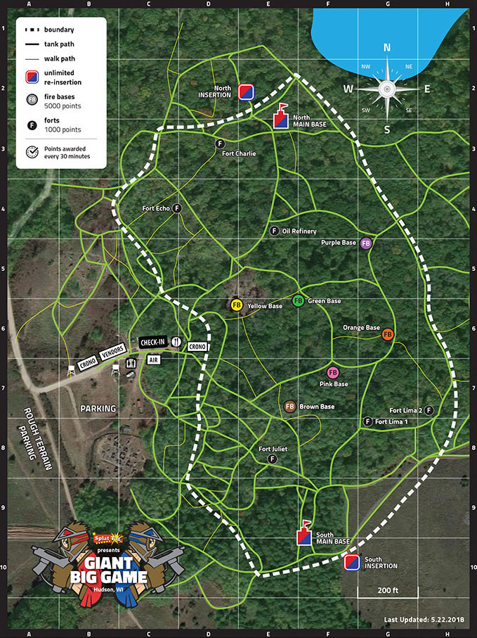
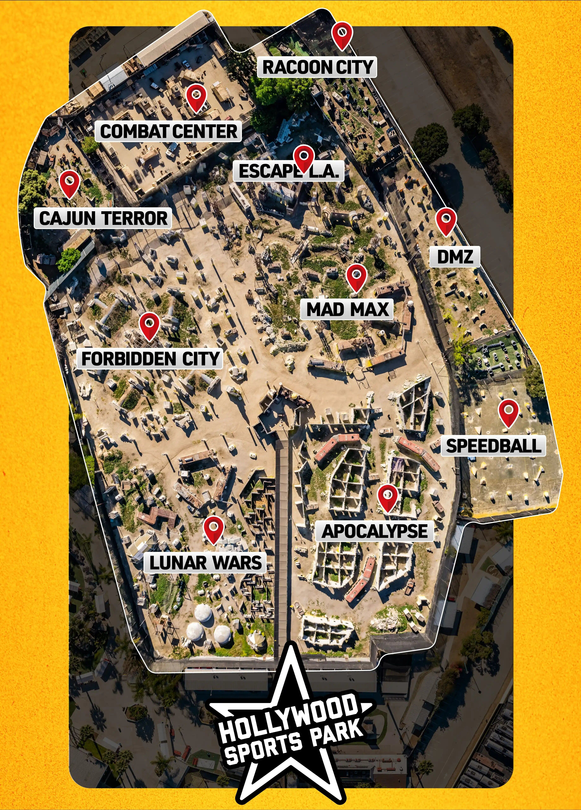
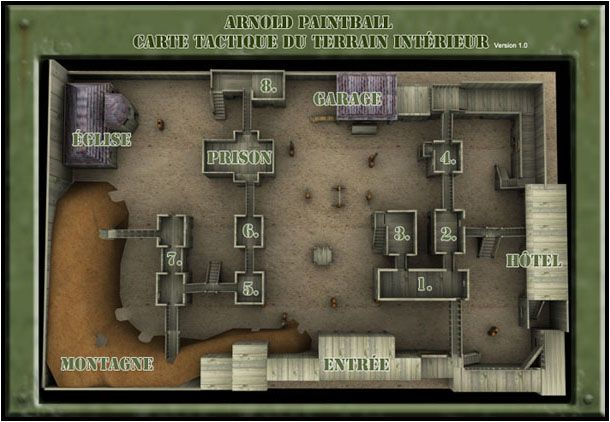

Modalidades de juego en AirSoft Sevilla
En ASS tenemos cuatro modalidades diferentes de juego, cada una con una disponibilidad diferente.
Siempre recordar, que todas son experiencias dignas de probar, y la más rara de ellas es algo que se debe probar al menos una vez en la vida.
Juego por equipos
Esta es la partida más basica y con más historia en ASS.
Se trata de una partida en la cúal dos equipos, normalmente, compuesto de la misma cantidad de personas luchan por tener el control de las diferentes zonas designadas y obtener la mayor cantidad de puntos.
Los jugadores pueden hacer "respawn" de manera indefinida hasta los últimos treinta(30) minutos antes del tiempo predefinido. Una vez terminado el tiempo prefedinido de partida, que es de tres(3) horas, el juego terminará cuando el último jugador de un equipo haya sido abatido.
El ganador será aquel equipo que haya acumulado más punto durante el tiempo de juego.
Se trata de una partida en la cúal dos equipos, normalmente, compuesto de la misma cantidad de personas luchan por tener el control de las diferentes zonas designadas y obtener la mayor cantidad de puntos.
Los jugadores pueden hacer "respawn" de manera indefinida hasta los últimos treinta(30) minutos antes del tiempo predefinido. Una vez terminado el tiempo prefedinido de partida, que es de tres(3) horas, el juego terminará cuando el último jugador de un equipo haya sido abatido.
El ganador será aquel equipo que haya acumulado más punto durante el tiempo de juego.

Buscas y Destruir
En estas partidas estaremos divididos en dos equipos diferentes, en la cual uno de los equipos tendra que mantener posiciones y defender su objetivo. Mientras que el otro equipo, debera rastrear el mapa y eliminar a los defensores.
El objetivo puede ser una persona u objeto movibles, o un objeto inamovibles.
El equipo atacante estará compuesto, normalmente, por dos personas más que el equipo defensor.
Está partida suele oscilar en duración, ya que en esta modalidad no hay posibilidad de respawn y ganará el equipo que consiga eliminar al otro equipo por completo primero.
Cabe destacar, que la duración máxima es de 2h. Si en ese tiempo no se han destruido todos los objetivos o eliminar a todos los defensores, los defensores ganarán.
El objetivo puede ser una persona u objeto movibles, o un objeto inamovibles.
El equipo atacante estará compuesto, normalmente, por dos personas más que el equipo defensor.
Está partida suele oscilar en duración, ya que en esta modalidad no hay posibilidad de respawn y ganará el equipo que consiga eliminar al otro equipo por completo primero.
Cabe destacar, que la duración máxima es de 2h. Si en ese tiempo no se han destruido todos los objetivos o eliminar a todos los defensores, los defensores ganarán.

Z-Infection
El apocalipsis zombie ha llegado a Sevilla y en ASS estamos listos para enfrentarnos a el. Se requiere que los soldados se reunan en nuestras instalaciones INDOOR, las cuales se encuentran en Dos Hermanas y allí recibirán el resto de instrucciones.
Vive grandes aventuras y subidones de adrenalina con estás freneticas partidas de máximo 40 minutos, en las cuales un único infectado debera covertir a todos los jugadores. Deberá llegar hasta ellos y tocarlos, todo esto sin ser golpeados por las bolas de los vivos.
En el momento que un jugador quede infectado, pasará al equipo contrario y deberá ayudar a convertir al resto de jugadores.
Si al finalizar los 40 mintuos aun quedan jugadores vivos, estos serán los ganadores. En caso contrario, la partida finalizará cuando no queden jugadores vivos.
Se llevarán acabo hasta 5 partidas, y las partidas se organizarán un sabado de cada mes.
Por precaución, las replicas de airsoft deberán tener la presion al mnimo y estar en modo "single-fire". Todo esto para que estas partidas freneticas sean lo más seguras posibles.
Vive grandes aventuras y subidones de adrenalina con estás freneticas partidas de máximo 40 minutos, en las cuales un único infectado debera covertir a todos los jugadores. Deberá llegar hasta ellos y tocarlos, todo esto sin ser golpeados por las bolas de los vivos.
En el momento que un jugador quede infectado, pasará al equipo contrario y deberá ayudar a convertir al resto de jugadores.
Si al finalizar los 40 mintuos aun quedan jugadores vivos, estos serán los ganadores. En caso contrario, la partida finalizará cuando no queden jugadores vivos.
Se llevarán acabo hasta 5 partidas, y las partidas se organizarán un sabado de cada mes.
Por precaución, las replicas de airsoft deberán tener la presion al mnimo y estar en modo "single-fire". Todo esto para que estas partidas freneticas sean lo más seguras posibles.

3 dias de simulación militar
Una vez al año, preferiblemente en verano, ASS organizá un evento de una semana, en el cual se lleva acabo una partida que tiene una duración de 3 dias. La ubicación es cambiante, por ello la topografia de la misión tambien.
Para poder participar en la misión es necesario ser mayor de edad, o tener +16 años y una autorazación firmada por el tutor legal.
El evento cuanta con personal sanitario, y vigilancia policial las 24 horas, para velar por la seguridad de todas las personas.
En caso de querer obtener más información respecto a esto, por favor pongase en contacto con la organización, via e-mail, telefono o presentandose en alguno de nuestros establecimientos.
Para poder participar en la misión es necesario ser mayor de edad, o tener +16 años y una autorazación firmada por el tutor legal.
El evento cuanta con personal sanitario, y vigilancia policial las 24 horas, para velar por la seguridad de todas las personas.
En caso de querer obtener más información respecto a esto, por favor pongase en contacto con la organización, via e-mail, telefono o presentandose en alguno de nuestros establecimientos.